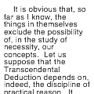

autotext
autotext()
Generates random text from an XML-document. Autotext is a very powerful feature once you learn how to use it. NodeBox has a built-in implementation of the Kant Generator Pro. XML-files for the Kant Generator have a specified structure. Further information can be found at http://diveintopython.org/xml_processing/
 |
txt = autotext("kant.xml")
text(txt, 10, 10, width=100) |
a string containing automatically generated text